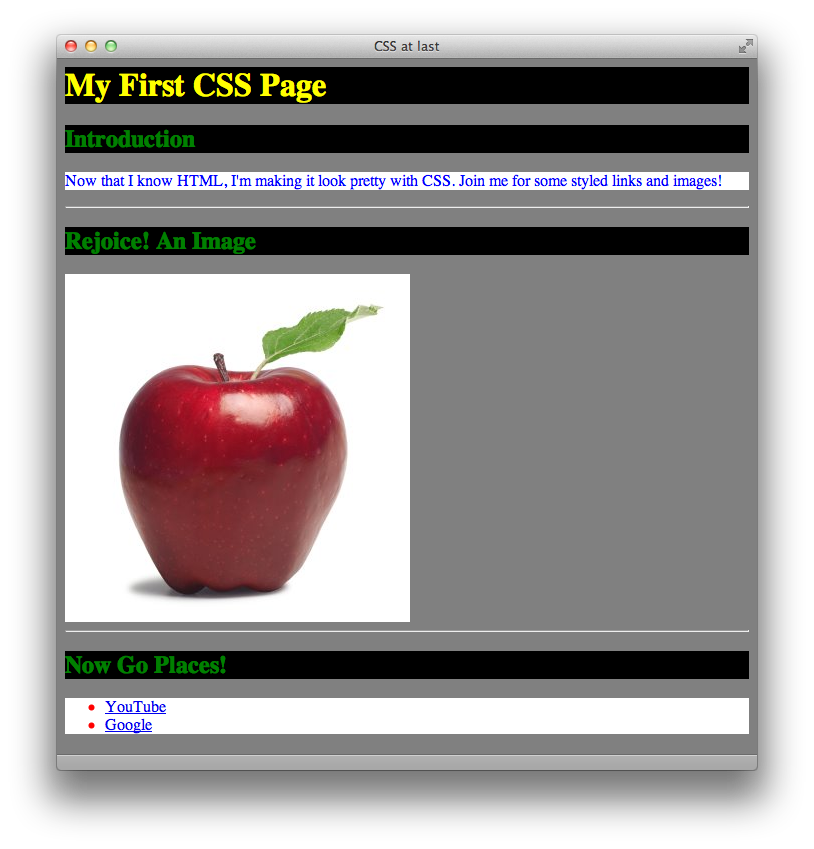
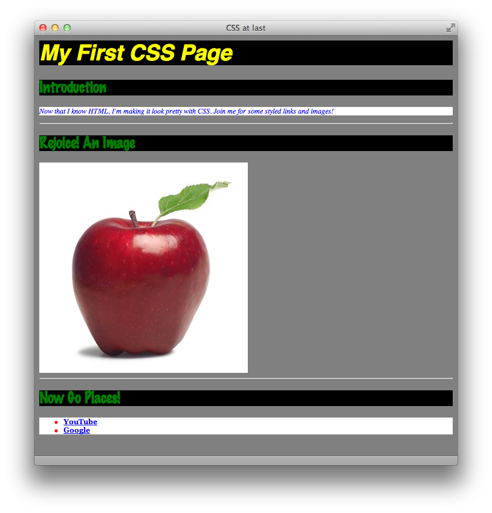

Introduction
Hopefully, you can remember back to the first lesson, where I suggested that HTML and CSS are a lot like a color-by-numbers books from the days of Highlights magazine. HTML represents the black and white picture with numbers, and CSS represents the table that matches the numbers up with different colors. At this point, we’re able to paint a pretty complex black and white picture: one with paragraphs, links, headers, lists, and images. Now we get to color them in!
CSS stands for Cascading Stylesheets, and the C we’ll specifically address later. It is a different computer language than HTML, so we’re going to be starting from square one here. We’re at an advantage though, because CSS still depends on HTML, so there are some similarities. With that said, let’s make an HTML document to base our CSS skills on. Of course, start with the <html> tag, and add in a <head> (with a <title>) and <body>.
<html> <head><title>CSS at last</title></head> <body> </body> </html>
Now, let’s drop in some content to style. Because it’s good practice, let’s start with a <h1> header that announces the name of our site. There’s probably an introductory paragraph, then a horizontal rule, then an image and another horizontal rule, and then a list of links. Please follow along with me in your HTML document, but feel free to substitute your own content. For example, a well-rounded page:
<html> <head><title>CSS at last</title></head> <body> <h1>My First CSS Page</h1> <h2>Introduction</h2> <p>Now that I know HTML, I’m making it look pretty with CSS. Join me for some styled links and images!</p> <hr/> <h2>Rejoice! An Image</h2> <img src="apple.jpg" alt="an apple" /> <hr/> <h2>Now Go Places!</h2> <ul> <li><a href="http://www.youtube.com">YouTube</a></li> <li><a href="http://www.google.com">Google</a></li> </ul> </body> </html>
Save your HTML document, and open it in your browser. This is the last time you’ll be seeing plain HTML output! Take a mental picture if you’re the sentimental type. Now go back to your text editor, and create a new document. Here we go!
Your Stylesheet
A stylesheet, or CSS document, is at its core just a list of tags. Here’s a quick quiz for you: how many unique tags did I use in my HTML document above? (Remember, a beginning tag and a closing tag still only count as one tag). The answer is with your homework download. There are a couple tags in HTML that cannot be styled by CSS, like tags that fall within <head> and <head> itself. Remember, the HTML data in the <head> section is behind-the-scenes information for the browser. There’s also debate about whether you can style the <html> tag itself, and while it’s certainly possible, many people choose not to. So, let’s cross <html>, <head>, and <title> off our list. We still have a good number of tags left from our page, so let’s start our stylesheet with that list:
body h1 h2 p hr img ul li a
That’s a good start. Copy that list into your blank document, and save it with a “.css” extension. Something like “styles.css” is always appropriate. Notice how it already looks kind of like a table—if this were on a color by numbers picture, each of those tag names could just as easily be a number. Now we get to fill in how each tag looks. In CSS, we use curly brackets to achieve this, rather than HTML’s greater-than and less-than symbols. So add a set of curly brackets { } next to—not around—each tag in the list.
body { } h1 { } h2 { } p { } hr { } img { } ul { } li { } a { }
All we need to do from here is fill in the brackets with information like the font, the text color, the background color, the size, and so on. CSS is that straightforward. The only complicated part is learning all of the different ways you can style a tag, and the ways that they can work together. For this first lesson, we’re just going to focus on color, font, basic size, and borders.
Color
A CSS statement (something that you put in the curly brackets) follows this general rule: property: value;. A property is something like “color” or “font,” and a value is something like “black” or “Arial.” Always put a colon between the property and the value, and always put a semi-colon after the value. For now, there are only two things we want to color in CSS: the background, and the text. There are then two different properties for color: background-color and color, respectively.
Let’s dig a little deeper: the <body> tag in HTML represents all of the viewable area on the page. So, to make the background color of our page black, we must put a background-color statement in the curly brackets next to body, like so:
body { background-color: black; }
That’s really all it takes! If we wanted to make the background color gray and all of the text on the page fuschia, we would simply put both of those statements in the curly brackets for body. At this point, it might get a little messy to read, so we put each statement on its own line, like so:
body { background-color: gray; color: fuschia; }
Like in HTML, hard returns, tabs, and double spaces all have the same effect as a single space in CSS. Now, you may have noticed that we’re writing all of this in plain English. Isn’t programming supposed to be harder? Isn’t there supposed to be more, well, code? Gibberish? Well, this comes in when you want to get creative with your colors. CSS only supports English names for 16 colors: aqua, black, blue, fuchsia, gray, green, lime, maroon, navy, olive, purple, red, silver, teal, white, and yellow. If you want to venture beyond this palette, you need to start describing your colors in hex.
Hexadecimal is a code language that consists of the numbers 0-9 and the letters A-F. Color hex codes are six characters long and preceded by a pound sign. For example, the hex code for white is #ffffff. To give a complete list of common hex codes and the colors they correspond to would take up too much space. Instead, you can find hex color tables at many websites like this one.
Getting back to CSS though, if you want to use a non-English color, the code simply looks like this:
body { background-color: #ccffff; }
Okay, let’s move back to our main stylesheet. We currently have a gray background and fuschia text (ugly, I know). Letʼs move on to our next tag, <h1>. We can give our big header its own background color (which will just color the rectangle of space behind the text, no taller or shorter and the whole width of the page) and text color. I’ll choose yellow on black, and I’ll use English colors for the rest of the lesson, for simplicity’s sake.
body { background-color: gray; color: fuschia; } h1 { background-color: black; color: yellow; } h2 { } p { } hr { } img { } ul { } li { } a { }
While I’m at it, I’ll make my second-level headers <h2> green on black and my paragraphs blue on white. I’ll also make my list have a white background, and my list items red. Follow along with me, using the same colors that I do for now.
body { background-color: gray; color: fuschia; } h1 { background-color: black; color: yellow; } h2 { background-color: black; color: green; } p { background-color: white; color: blue; } hr { } img { } ul { background-color: white; } li { color: red; } a { }
The last three tags in this example are tricky, because in the HTML, <a> is nested within <li>, which is nested within <ul>. Nested, by the way, is when a tag is completely enclosed (both beginning and end tag) within another tag’s beginning and end. CSS will always override a value for certain property if, later, that property is defined for a different element. Take the background color, for example. We define it first to be gray, in body. Yet, we say that the background color is black in h1. Since the <h1> tag is nested within the <body> tag in our HTML, h1’s CSS overrules body’s CSS.
This doesn’t mean that the background color will be black for the rest of the page, though. Since we have clearly marked the beginning and end of our h1 with beginning and closing tags, the background color will only be black in that enclosed area, and go back to gray afterwards, until some new tag comes in with its own value for background color.
This order of importance works in the same way for tags that are immediately nested within each other. If we put a different background color value in ul, li, and a, only the background color defined in a will show up, since it is deepest-nested tag in our HTML. Since I haven’t styled the a tag above, the statements I’ve made in the ul and li tags will be safe.
That last bit may have been confusing. Hopefully, once we start looking at how our CSS is changing the web page, it’ll become clearer. So let’s take a detour and go back to our HTML document and set it up to load our stylesheet. Be sure to save your CSS file before moving on!
CSS in HTML
Linking your HTML page to your stylesheet is easy, and only takes one line of code. Since it’s part of the behind-the-scenes magic that occurs as the page loads, this line of code goes in the <head> section. I like to insert it after the title. It looks just like this:
<head> <title>My First CSS Page</title> <link rel="stylesheet" href="styles.css" type="text/css" /> </head>
Okay, there are a couple things to look at here. First, you notice two new attributes, rel and type. You don’t need to worry about their greater meaning, just make sure that they have these same values when you refer to a stylesheet. Second, you may notice that the tag itself, the <link> tag, is new. Why didn’t they use the <link> tag for text links instead of the <a> tag? Beats me. The <link> tag is used to link your HTML file to other behind-the-scenes files (like CSS files) in order for the whole package to perform as it should.
You probably recognize the href attribute, and it’s pointing to the CSS file itself. Recall from lesson two that in this example, the HTML file and CSS file must be in the same directory (or folder) for this href to point to the right place. Otherwise, you’d need the whole URL, pointing to the other directory where the CSS file was located. So make sure that your HTML file and CSS file are in the same folder. Finally, you’ll notice that the <link> tag closes itself with a slash at the end, rather than using a separate </link> tag.
So there it is! Now our HTML page is linked to our stylesheet, and the colors are ready to fly. Save your HTML document, make sure it’s in the same folder as your stylesheet (which should be saved too), and open the HTML file in your internet browser. If everything’s gone right, your window will look something like this:
Fonts
Back to our stylesheet. Colors are great and they certainly make our website more appealing, but Times New Roman is a boring font. Let’s start using some wacky fonts on our page. There are multiple font properties, including font-family, font-size, font-style, and font-weight. Respectively, those dictate the actual Font, the size, whether it’s italic or not, and whether it’s bold or not. Let’s run through some examples.
Font-family is interesting because it can take on multiple values, separated by a comma. CSS will always try to use the first one you name, but if the computer doesn’t have that font, it will try to use the next one, and so on. Traditionally, web designers include either serif or sans-serif as the last value in the font-family property. Serifs are the little tails on the ends of letters—for example, Times New Roman is a serif font and Comic Sans is a sans-serif font. Throwing either of these as your last value makes CSS tell the browser “Hey, I don’t care what font you use, just make sure it has serifs (or doesn’t have them).” So, let’s insert a sample font-family statement for our h1:
h1 { background-color: black; color: yellow; font-family: Helvetica, Arial, "Comic Sans", sans-serif; }
This is saying, “make the font Helvetica, if you have it. If you don’t have Helvetica, then use Arial instead. If you don’t have either of those two, I guess Comic Sans is okay. If you don’t have any of these fonts, just use any sans-serif font that you want to.” Note that Comic Sans is in quotes. When you have to include a space in a font name, you must include the whole value in quotes, otherwise CSS might get confused and think it’s two separate values. The separating comma goes outside of the quotes, though.
Say I want my <h1> font to be 36 pixels tall. We then add in the font-size property:
h1 { background-color: black; color: yellow; font-family: Helvetica, Arial, "Comic Sans", sans-serif; font-size: 36px; }
px stands for pixels, and it must be connected (no space) to the number for it to count. That one’s pretty simple. Finally, let’s say I want my <h1> to be bold and italic. We add in the font-weight and font-style properties:
h1 { background-color: black; color: yellow; font-family: Helvetica, Arial, "Comic Sans", sans-serif; font-size: 36px; font-weight: bold; font-style: italic; }
That’s a lot of code to define a font! It does look straight-forward laid out like that, but you can condense all of these things into one font property. It contains all the values for these four properties, but in a specific order: style, weight, size, font family. If you don’t care about a property like weight or style, you can just skip it. For example, the above four properties can be condensed into this one line:
font: italic bold 36px Helvetica, Arial, "Comic Sans", sans-serif;
Right now, you may be wondering why I lied to you about the commas earlier. It turns out that the font property only uses commas to separate different font names, not every separate style value. It’s the exception to the rule. Trust me, the above code is the way to go.
I’m going to make my <h2> a little smaller and in Marker Felt and my list items even smaller and in bold Georgia. I’ll just make my paragraphs italic. So now, my stylesheet mirrors this CSS:
body { background-color: gray; color: fuschia; } h1 { background-color: black; color: yellow; font: italic bold 36px Helvetica, Arial, "Comic Sans", sans-serif; } h2 { background-color: black; color: green; font: 24px "Marker Felt", sans-serif; } p { background-color: white; color: blue; font-style: italic; font-size: 12px; } hr { } img { } ul { background-color: white; } li { color: red; font: bold 12px Georgia, serif; } a { }
And the page now looks like this in the browser:
Size
We’re already doing much more in this lesson than in the previous ones, but there is more to go. Hang in there. Fonts are pretty complicated properties, but size is relatively simpler. There are only two properties: width and height. They take pixel dimensions, similar to font-size, and look like this:
width: 500px; height: 400px;
Width and height apply to boxy objects, like images and paragraphs. If you assign them to things like headers, they’ll control the space of the box around the text, not the text height itself—that’s for font-size. Be careful when you assign both a height and a width, because you can create too small a box for your content (for example, if you have more words in your paragraph that will fit in 500px by 400px). If you leave one dimension undefined, the browser will scale the box in that dimension to fit the content inside.
If you define the height and width of an image, and what you define is different than the image’s actual dimensions, the browser will stretch and distort the image to fit the dimensions you specify in your CSS. For this reason, height and width aren’t used a lot on <img> tags.
I’m just going to define the width on my <h2> tags, and define both the height and width of my paragraphs, despite what I just told you. I won’t include my
whole stylesheet here, just these additions:
h2 { background-color: black; color: green; font: 24px "Marker Felt", sans-serif; width: 500px; } p { background-color: white; color: blue; font-style: italic; font-size: 12px; width: 500px; height: 300px; }
When you save the changes and reload your HTML document into your browser, notice how the boxes around the <h2> tags and your paragraph are now restricted to certain sizes. Also notice that all three <h2> tags follow the same rules. It would be the same if you had multiple <p> tags—each would be the same size and color. Finally, note that the height for your <h2> tags is unspecified—when this is the case, the browser will only make it as tall as it needs to be (say, one or two lines of text).
Borders
One last CSS property for today. Like I said earlier, understanding the general technique behind CSS is easy, but learning all the properties and all the values takes a long time. Border is like the font property: it can include multiple properties on one line. These three properties are border-width, border-style, and border-color, used in that order. The first is how thick the border should be in pixels. The second can be one of many things: dotted, dashed, solid, or double. The final can either be one of our special 16 English colors or a hex color. Here’s a sample border property:
border: 4px dashed blue;
and it looks like this:
You can apply a border to almost any tag, and it will wrap around the guidelines set by height and width if there are any. I’m going to add a two-pixel-wide, red dotted border to my <h1> tag, but I won’t post it here for you. I’m getting tired. What do you think it would look like? Go ahead and add it to your own stylesheet.
That wraps up our first go at CSS! It’s a lot to take in all at once, but it’s a strong start to a powerful language.
Key Concepts
- CSS begins as a list of the tags in your HTML document, followed by curly braces
{ }. Inside the braces, you put descriptive statements as to how each tag should appear. - Each statement is made up of properties and their values. An example property is
color, and an example value isblack. There’s always a colon between the property and the values, and there’s always a semi-colon after the last value, at the end of the statement. - You use the
<link>tag in the<head>of your HTML document to link your web page to your stylesheet. Make sure that thehrefpoints to the correct directory! - For our purposes, there are two color properties:
colorandbackground-color. - For fonts, you can use individual
font-style,font-weight,font-size,font-familyproperties, or combine them all (in that order) into onefontproperty. - For size, you can use the
heightandwidthproperties. - For borders, you can use the
border-width,border-style, andborder-colorproperties, in that order, in one singleborderproperty.
Homework
First download this lesson’s materials. Next, using HTML and CSS, create a web page that looks like the screenshot below. Hint: you will only have to use the <h1> and <p> tags in your HTML <body>. The font, in case you can’t tell, is Comic Sans (or Comic Sans MS. Why not include both of those names in your font property to be safe?). Name your HTML page “homework4.html” and your stylesheet “styles4.css”. When you’re finished, compare them to the similarly named files in the Answers folder.